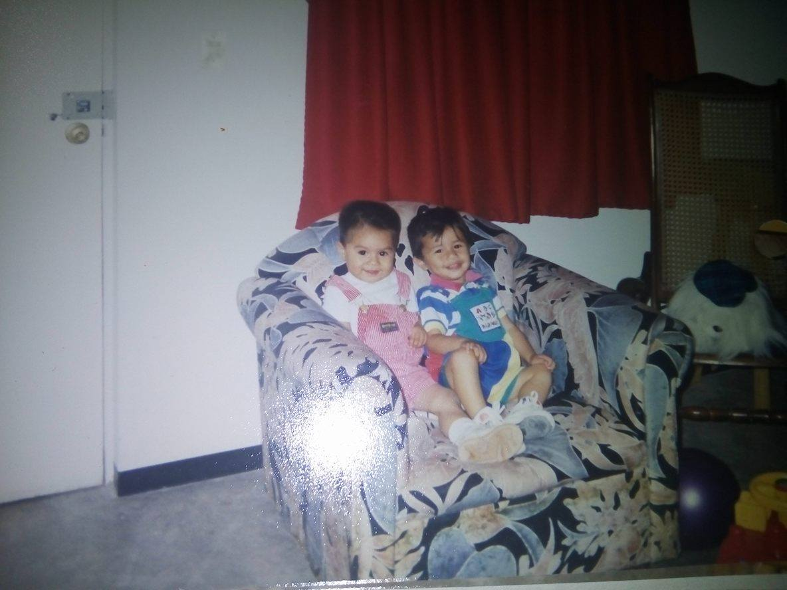
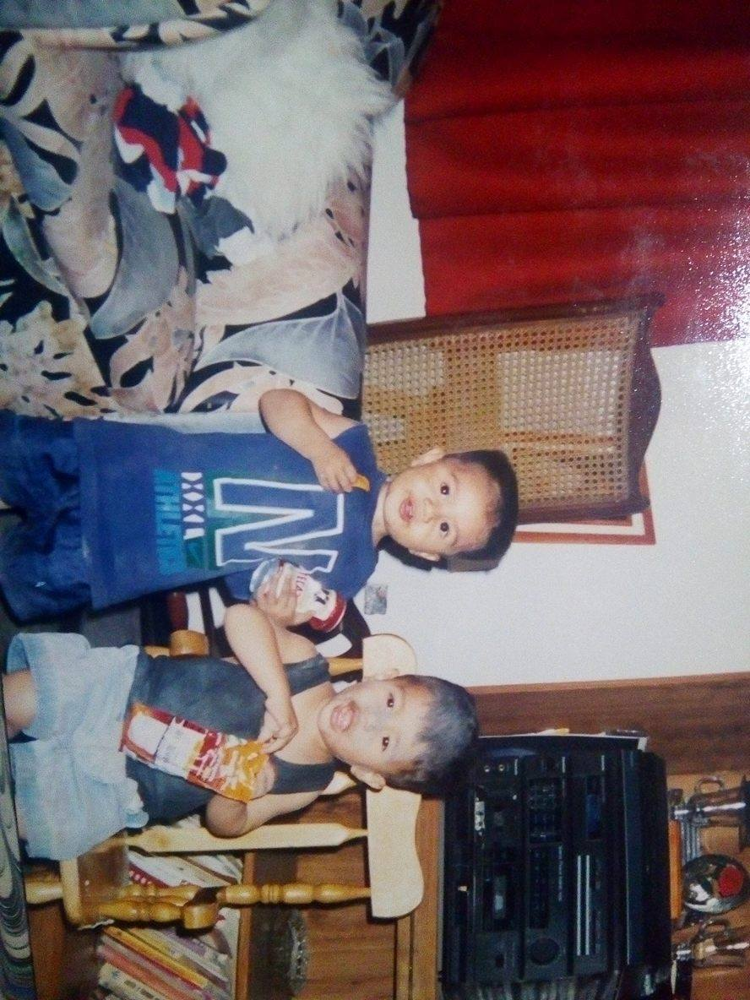
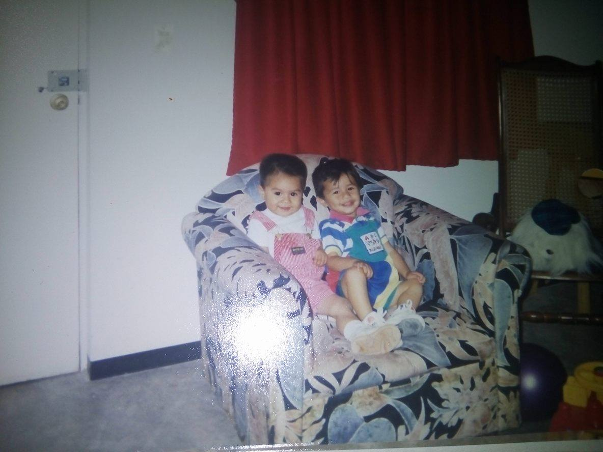
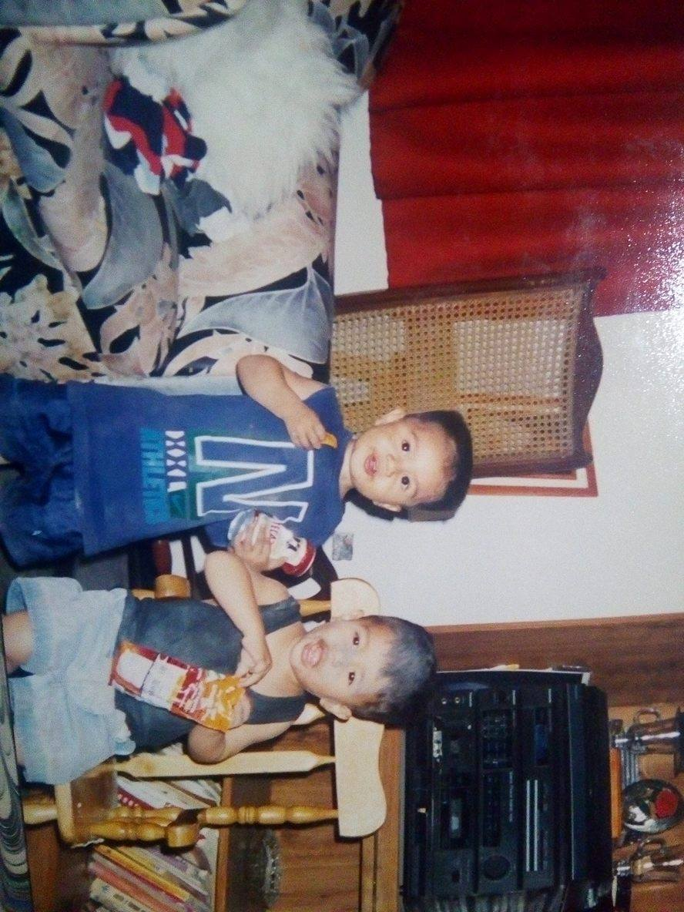
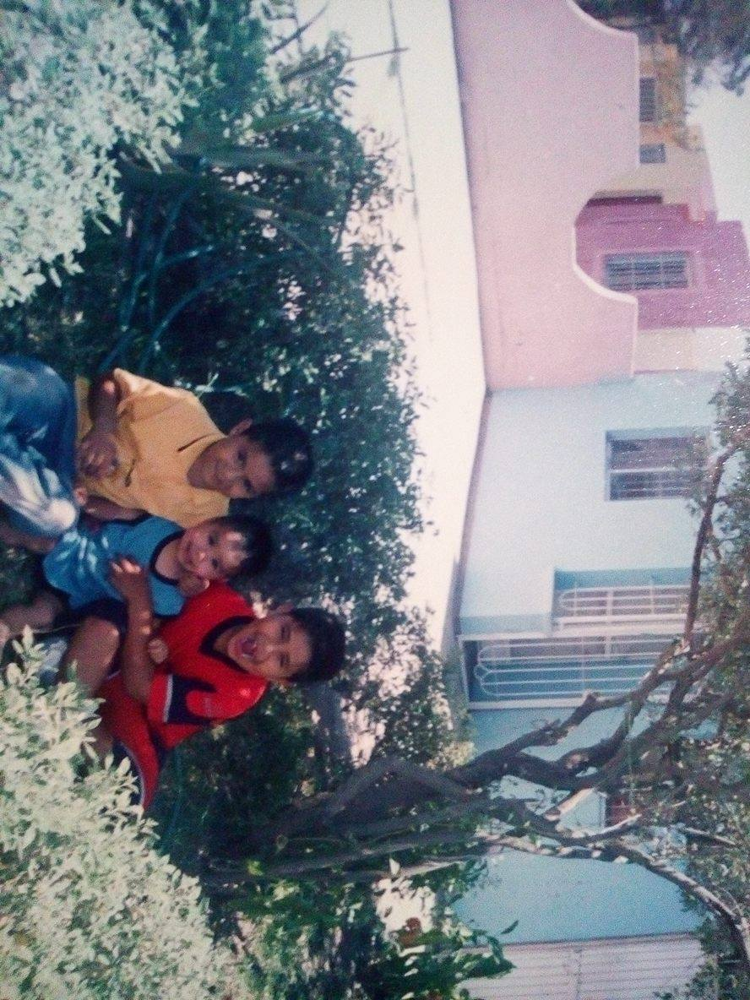

 
  
Naci el 15 de julio del año 1996 en la ciudad de los mochis sinaloa, mis padres son Santa Nuemi Sanchez Segura y Gonzalez De la Paz Humberto, he vivido toda mi vida en los mochis sinaloa desde pequeño y era un niño que era muy timido y no me gustaba hacer muchas cosas que divertirme siempre estaba muy apegado a mi madre, solo me gustaba hacer las cosas que me gustaban y era demasiado chiquin con mis cosas, solo habia una persona con la cual me decian que podia jugar normalmente y era con mi primo victor que desde que tengo memoria le llamamos "Gordo" de cariño ya que nacio era un bebe muy gordo y al lado mio yo era un bebe flaquito,su nombre completo es Victor Ernesto Contreras Sanchez, =======
Hola soy hugo enrique gonzalez sanchez y esta es mi vida
Naci el 15 de julio del año 1996 en la ciudad de los mochis sinaloa, mis padres son Santa Nuemi Sanchez Segura y Gonzalez De la Paz Humberto,
he vivido toda mi vida en los mochis sinaloa desde pequeño y era un niño que era muy timido y no me gustaba hacer muchas cosas que divertirme
siempre estaba muy apegado a mi madre, solo me gustaba hacer las cosas que me gustaban y era demasiado chiquin con mis cosas, solo habia una
persona con la cual me decian que podia jugar normalmente y era con mi primo victor que desde que tengo memoria le llamamos "Gordo" de
cariño ya que nacio era un bebe muy gordo
y al lado mio yo era un bebe flaquito,su nombre completo es Victor Ernesto Contreras Sanchez,

>>>>>>> ead7714517b3aab57da99f37ab6a8aafed8ef138
el era como mi hermano ya que mi madre siempre lo cuidaba y casi siempre estaba en la casa, con el tengo un moton de anecdotas que me
cuentan mi padres eramos muy traviesos y que haciamos cada cosa y que no podian dejarnos solos porque haciamos cada cosa por ejemplo que
descompusimos el voiler del agua porque le abrimos por accidente y pensabamos que esa cosa se estaba quemando por dentro y lo apagamos
con agua que por votes de plasticos hibamos corriendo a la cocina y lo vaciamos hasta apagar el voiler y ya no sirvio, asi es una de las
muchas cosas travesuras que hacia con el. Todo lo hacimos juntos hasta festejar su cumple mi madre nos hacia trajes dependiendo de como
era la fiesta por ejemplo una fue de power ranger y nos vestimos de rojo y azul.Les platico esta parte de mi primo porque es lo mas recuerdo
<<<<<<< HEAD
de mi niñes desde pequeño, ahora le dire como era fisicamente y mi forma de ser de pequeño,era un niño flaquito y hasta la fecha cabezon,
siempre estaba enfermo desde siempre con alergias o con cada cosa que salia de enfermaedad que se propagaba a los niños chicos yo la tenia
o me contagiaba de ella , me decin que siempre tengo la cara de señor desde pequeño, no era muy esprecivo con la gente y siempre me gustaba
hacer cosas raras como observar las mariposas o cosas que a mucha gente le parecia aburrido ami me gustaba hacer. Ya cuando cumpli la edad
de ir al kinder, que fue en el justo cierra notengo muchos recuerdos de el pero no me acuerdo haver tenido ninguna mala experiencia.Luego entre a la primaria que fue en la maria elvira delgado de calderon en la cual se podria decir que era un buen alumno pero tambien sufria un poco de bulliying ya que estaba gordo devido a que no me alimentaba como debia ser ya que era muy especial con lo que deberia comer porque si no me gustaba lo desechaba ======= de mi niñes desde pequeño, ahora le dire como era fisicamente y mi forma de ser de pequeño,era un niño flaquito y hasta la fecha cabezon, siempre estaba enfermo desde siempre con alergias o con cada cosa que salia de enfermaedad que se propagaba a los niños chicos yo la tenia o me contagiaba de ella , me decin que siempre tengo la cara de señor desde pequeño, no era muy esprecivo con la gente y siempre me gustaba hacer cosas raras como observar las mariposas o cosas que a mucha gente le parecia aburrido ami me gustaba hacer. Ya cuando cumpli la edad de ir al kinder, que fue en el justo cierra >>>>>>> ead7714517b3aab57da99f37ab6a8aafed8ef138